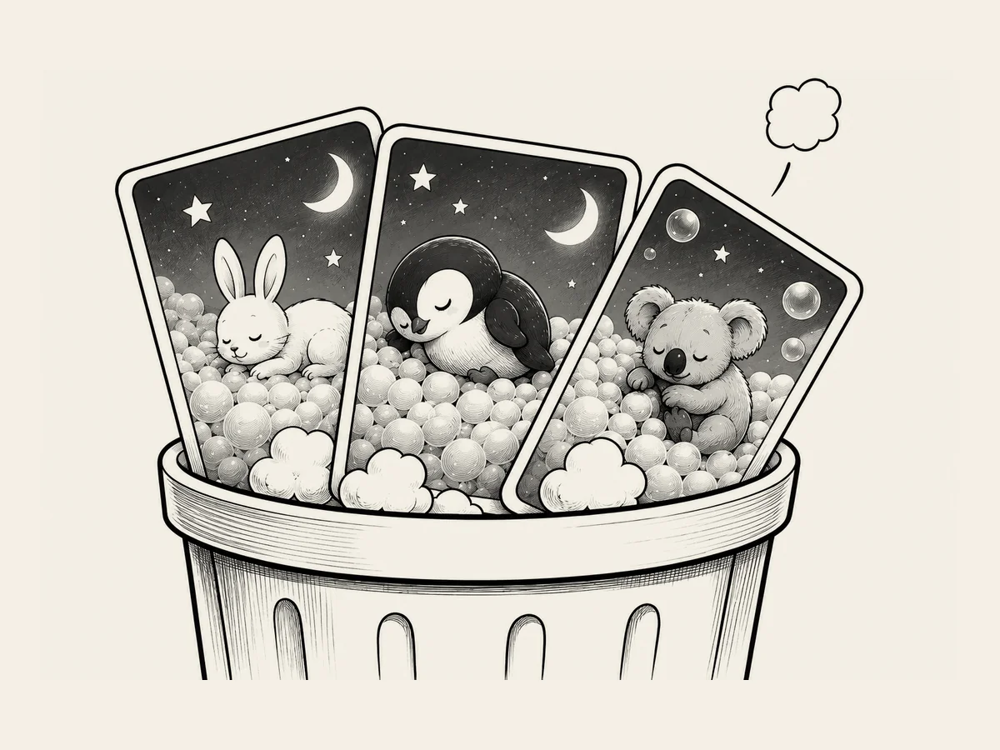

4.
雲がシャボン玉になってしまった。
キャラクターの絵が完成した。
今度は、
絵の中のキャラクターの位置や、
眠っているキャラクターの表情などを確認した。
いろいろなキャラクターを
一つずつ見ながらチェックした。
ところが、
何かがおかしい。
最初の絵をもう一度見た。
雲がふわふわしている。
次の絵も大丈夫だ。
でも、
後ろにいくほど
少しずつ変わっていた。
最後のほうになると、
雲がおかしな形に変わっていた。
シャボン玉みたいだ。
見方によっては、
発泡スチロールの粒にも見える。
あれ？
いつから、
こんなふうになったんだ？
最初は、
間違いなく雲だった。
でも、
AIが描き続けているうちに、
少しずつ
変えていったらしい。
僕は、
雲を変えてなんて
一度も言ってないのに。
結局、
最初から描き直すことになった。
